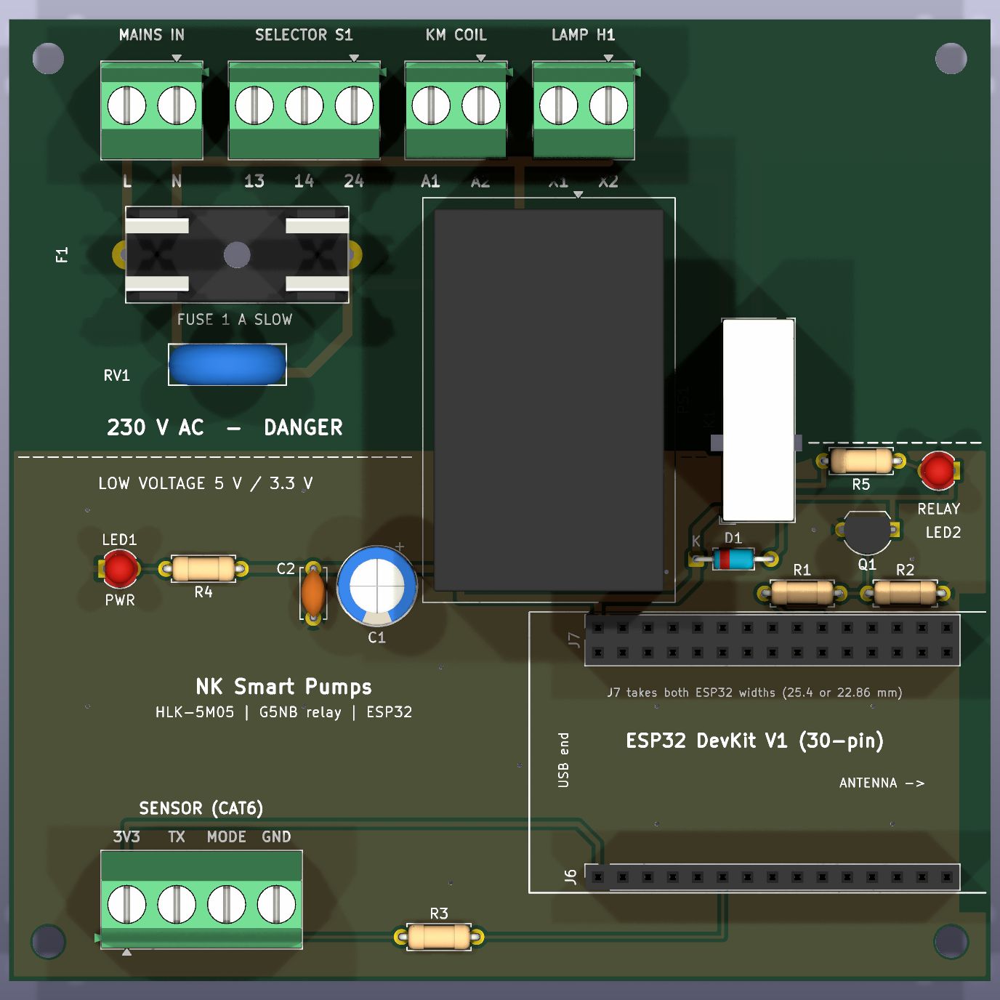
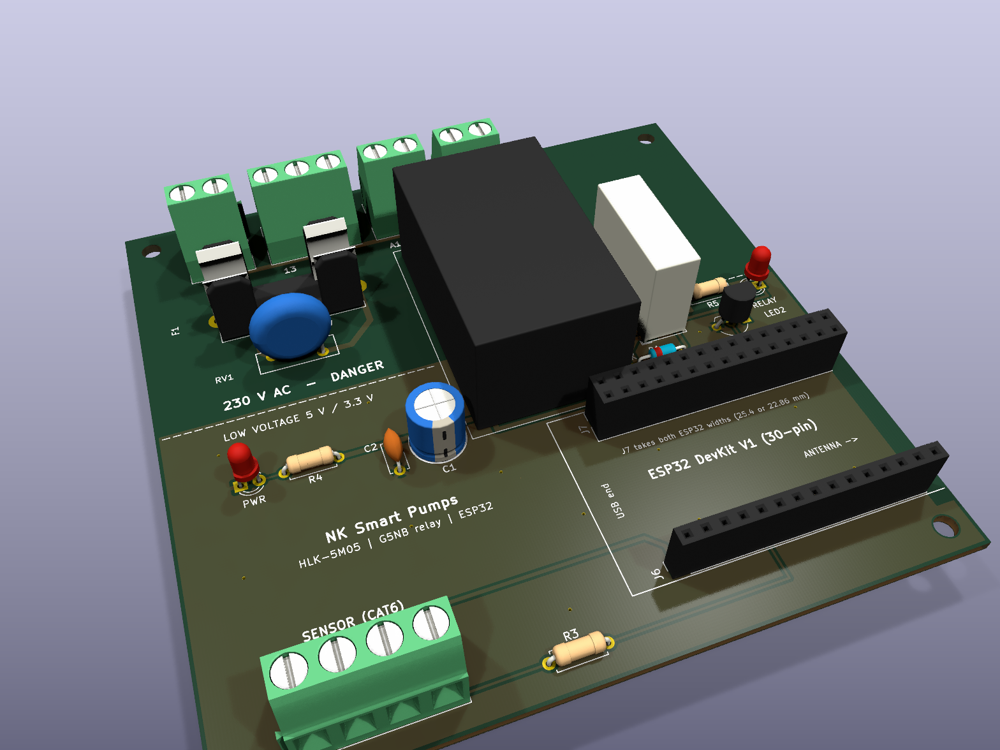

The board carries everything that was loose wiring in the main guide: fuse F1, a surge absorber, the HLK-5M05, the relay that switches the contactor coil, the ESP32 sockets and the sensor terminal. You only connect wires to its screw terminals. Pump current never goes through the board: the supply cable, the contactor main contacts and the pump cable stay exactly as in the guide.
| Terminal | Pin | Wire goes to | Wire / notes |
|---|---|---|---|
| 230 V terminals (top edge) | |||
| MAINS IN (J1) | L | DIN L terminal (the one fed from the DB MCB) | 1.0 mm² brown. Replaces guide wires 4 and 5. |
| N | DIN N terminal | 1.0 mm² blue. Replaces guide wire 6. | |
| SELECTOR S1 (J2) | 13 | S1 terminal 13, plus a short link from S1 13 to S1 23 on the switch | 0.75 mm² brown. The fused live feed to both selector contacts (guide wire 13 and link J1). |
| 14 | S1 terminal 14 (AUTO out) | 0.75 mm² brown (guide wire 14) | |
| 24 | S1 terminal 24 (MAN out) | 0.75 mm² brown (guide wire 16) | |
| KM COIL (J3) | A1 | Contactor coil A1 | 0.75 mm² brown (guide wire 15) |
| A2 | Contactor coil A2 | 0.75 mm² blue. Replaces guide wire 12 (the KM 3/L2 to A2 link). | |
| LAMP H1 (J4) | X1 | Lamp X1 | 0.75 mm² brown. Replaces link J2 on the door. |
| X2 | Lamp X2 | 0.75 mm² blue (guide wire 17) | |
| Low-voltage terminal (bottom left), CAT6 from the tank | |||
| SENSOR (J5) | 3V3 | Sensor red | CAT6 orange + white/orange |
| TX | Sensor white | CAT6 green. Goes to GPIO16 through R3 on the board. | |
| MODE | Sensor yellow | CAT6 blue. Already tied to GND on the board, so no link wire is needed. | |
| GND | Sensor black | CAT6 brown + white/brown + white/green. White/blue stays spare. | |
Unchanged from the guide: wires 1–3 (DB to the DIN terminals), 7–8 (DIN L and N to KM 1/L1 and 3/L2), 9–11 (pump cable and earth). No longer needed: the DIN fuse F1, the relay module, the perfboard and wires 18–27; the board does all of that. Strip 8 mm, use ferrules on stranded wire, and never put two wires under one board screw.
| Ref | Part | What to buy (India: Robu, ElectronicsComp, Probots, Lamington Road / SP Road shops) | Qty | ₹ approx. |
|---|---|---|---|---|
| PS1 | AC-DC module | Hi-Link HLK-5M05 (5 V 1 A). Not the HLK-PM01; it has a different footprint. | 1 | 230 |
| K1 | Relay | Omron G5NB-1A-E 5VDC (SPST-NO, 5 V coil). The footprint fits only this relay. | 1 | 100–150 |
| F1 | Fuse holder + fuse | 5×20 mm PCB fuse holder, 22.5 mm pin pitch, with snap-on cover (e.g. BLX-A), and a 1 A slow-blow (T1A) 250 V glass fuse plus one spare | 1 + 2 | 40 |
| RV1 | Varistor | 10D471K MOV (300 V AC, 12 mm disc, 7.5 mm pitch) | 1 | 10 |
| J1, J3, J4 | Screw terminal | 2-way, 5.08 mm pitch, 300 V (KF301-2P / DG301) | 3 | 36 |
| J2 | Screw terminal | 3-way, 5.08 mm (KF301-3P) | 1 | 15 |
| J5 | Screw terminal | 4-way, 5.08 mm (KF301-4P, or two 2-way blocks slid together) | 1 | 20 |
| J6, J7 | Female header | J6: 1×15, 2.54 mm. J7: 2×15, 2.54 mm. J7's outer row takes an ESP32 whose pin rows are 25.4 mm apart (the common wide board), its inner row one with 22.86 mm, so either board plugs in. | 2 | 40 |
| Q1 | Transistor | BC547 (or BC548 / 2N2222A in TO-92, check pinout C-B-E) | 1 | 3 |
| D1 | Diode | 1N4148 | 1 | 2 |
| R1, R4, R5 | Resistor | 1 kΩ ¼ W | 3 | 3 |
| R2 | Resistor | 10 kΩ ¼ W | 1 | 1 |
| R3 | Resistor | 330 Ω ¼ W | 1 | 1 |
| LED1, LED2 | LED | 3 mm, red or green | 2 | 4 |
| C1 | Capacitor | 470 µF 16 V electrolytic, 8 mm diameter, 3.5 mm pitch | 1 | 12 |
| C2 | Capacitor | 100 nF ceramic, 5 mm pitch | 1 | 2 |
| H1–H4 | Mounting | M3 × 10 mm nylon standoffs + screws, to fix the board on the box back plate | 4 | 40 |
| Components for one board (HLK-5M05 included, ESP32 not) | ≈ 550–600 | |||
| PCB | Bare board | Order 5 (the minimum) from the zip file below | 5 | 700–2,000 |
Against the main guide's budget, the board replaces items 4–7 (relay module, capacitors, perfboard and terminals, DIN fuse; about ₹420), and the HLK-5M05 (item 3) is now part of this list. So the whole project costs about ₹900–2,200 more than in the guide, depending on where you order the PCB, and you get four spare boards.
The factory buys and solders every part in section 3. You receive finished boards and only plug in the ESP32, push in the fuse and connect the wires.
pcb\out\tank_controller_gerbers.zip and choose the same board settings as in Option B, quantity 5.pcb\out\assembly\tank_controller_bom.csv as the BOM and pcb\out\assembly\tank_controller_cpl.csv as the CPL (placement) file. All 17 lines should match a part by its LCSC number. If one is out of stock, pick the suggested equivalent with the same package and value, and for J5 and the relay K1 accept only the same footprint.pcb\out\tank_controller_gerbers.zip to a PCB maker. In India: Lion Circuits, PCB Power or Robu PCB (about ₹700–1,500 for 5 boards, 5–8 days). Abroad: JLCPCB or PCBWay (about $2 for the boards plus $15–25 shipping and customs, 10–15 days).#define CONTROLLER_PCB 1. The relay then runs on GPIO32, active HIGH (with 0, the sketch goes back to the relay module on GPIO23, active LOW).| Stage | Do this | It is right when |
|---|---|---|
| 0. Multimeter board unpowered, fuse fitted | Measure resistance from J1 L to J1 N; from each of J1–J4 to sensor GND; and across the fuse holder clips. | L to N: no short (high or slowly rising reading, because the HLK input capacitor charges). Any 230 V terminal to sensor GND: open (over limit). Fuse: about 0 Ω. |
| 1. Bench, USB only no 230 V anywhere | Plug the ESP32 into the sockets, connect USB to a laptop, flash the sketch. Wire the sensor to J5 through a short CAT6 piece and point it at the floor. Switch the pump ON and OFF from the app. | Distance readings are steady in the serial monitor and the app. The RELAY LED lights and K1 clicks with each ON / OFF (most DevKit V1 boards feed USB 5 V to VIN; if yours doesn't, check this in stage 2 instead). |
| 2. In the box, 230 V, no pump pump wires 9–11 not connected | Mount the board, connect all board terminals (section 1) and wires 1–3, 7–8. Unplug the USB cable, close the box, switch the MCB on. S1 on AUTO: switch ON and OFF from the app. S1 on MAN. S1 on 0. | PWR LED on, ESP32 connects. AUTO: app ON makes K1 click, KM pull in and the lamp light; app OFF releases all three. MAN: KM and lamp on whatever the app says. 0: everything off. |
| 3. With the pump | MCB off. Connect pump wires 9–11. MCB on, then run the full test sequence in section 10 of the main guide. | The pump starts and stops with KM, stops at 95 %, and the fault tests in the guide pass. |
File (in water-tank-controller\pcb) | What it is |
|---|---|
out\tank_controller_gerbers.zip | Upload this to the PCB maker (Gerber + drill files) |
out\assembly\tank_controller_bom.csv, tank_controller_cpl.csv | For factory assembly: parts list with LCSC part numbers, and the position and rotation of every part |
tank_controller.kicad_pcb | The board, opens in KiCad 10 |
build_board.py, make.ps1 | Generator script; .\make.ps1 rebuilds the board, runs the design-rule and isolation checks, and re-exports the zip and pictures |
tank_controller.kicad_dru | The 230 V rules: 1 mm tracks, 2 mm between 230 V nets, 6 mm to low voltage, 2 mm to the board edge |